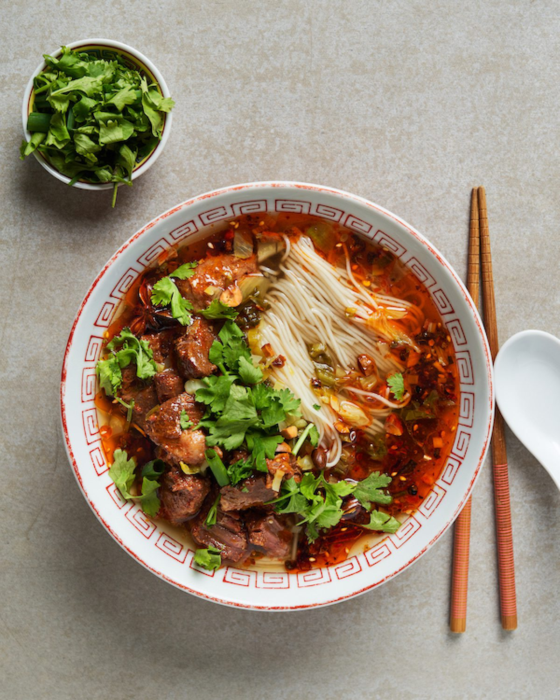

Home
Chongqing Noodles Recipe

Description
Chongqing noodles (Chongqing Xiao Mian) are a beloved street food from Chongqing, China, featuring chewy noodles
tossed in a fiery, numbing sauce. The dish is characterized by its bold málà flavor—combining the heat of chili
oil with the tingling sensation of Sichuan peppercorns, along with aromatic garlic, ginger, and a savory-spicy
sauce base.
Ingredients
- Fresh Wheat Noodles
- Chili Oil
- Sichuan Peppercorn Powder
- Soy Sauce
- Black Vinegar
- Sesame Paste
- Garlic (minced)
- Ginger (minced)
- Scallions
- Vegetable Stock or Water
- Peanuts (roasted, optional)
- Pickled Vegetables (optional)
Steps
- In a large serving bowl, combine soy sauce, black vinegar, sesame paste, minced garlic, and minced ginger.
Mix well.
- Add chili oil and Sichuan peppercorn powder to the bowl. Adjust amounts based on your heat preference.
- Pour in 2-3 tablespoons of hot vegetable stock or noodle cooking water to thin the sauce slightly. Stir
until smooth.
- Bring a large pot of water to a boil. Cook the noodles according to package directions until just tender.
- Reserve about ½ cup of the cooking water, then drain the noodles.
- Add the hot noodles directly to the bowl with the sauce. Toss thoroughly to coat every strand.
- Add a bit more cooking water if needed to achieve your desired consistency.
- Top with chopped scallions, roasted peanuts, and pickled vegetables if desired. Serve immediately while hot.